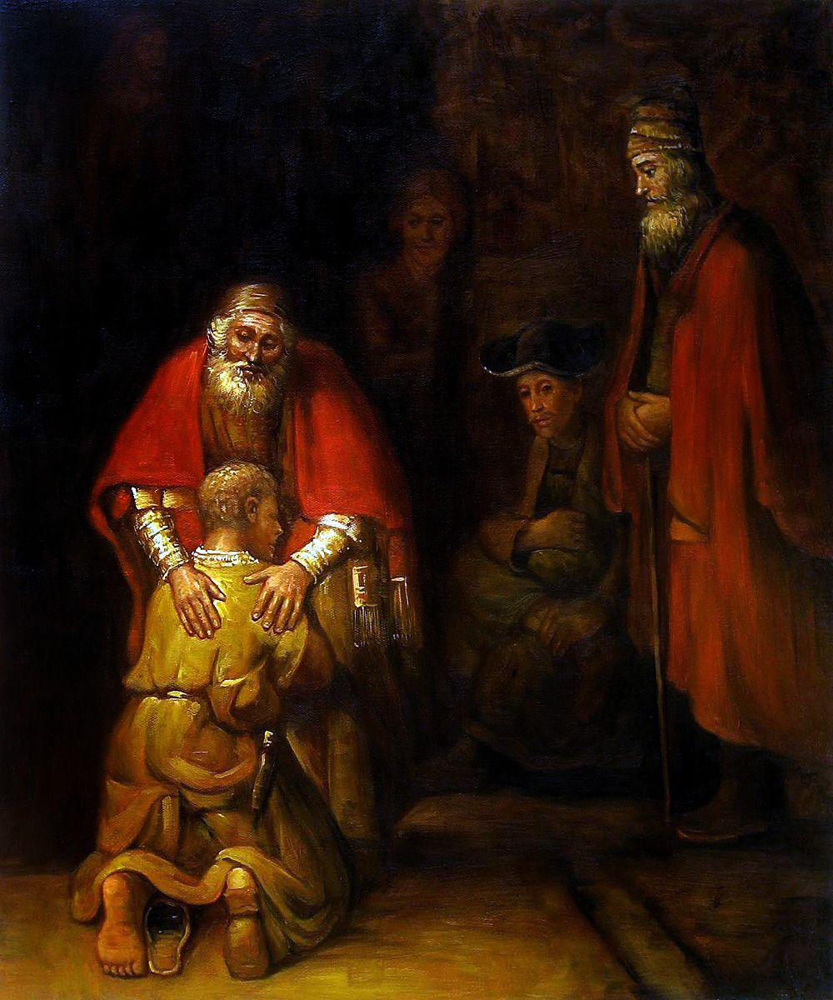
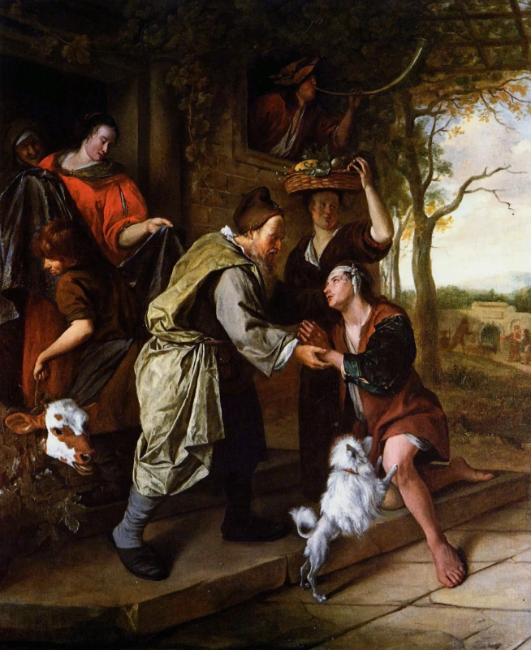

«Возвращение блудного сына» Рембрандта. Почему это шедевр

«Возвращение блудного сына» (1669). Старый отец вновь обрёл покой. Его младший сын вернулся. Он не колеблясь
прощает ему растраченное наследство. Никаких упреков. Только милосердие. Всепрощающая отцовская любовь.
А что же сын? Он дошёл до крайней степени отчаяния. Нищий и оборванный, он забыл о гордости. Он упал на
колени. Почувствовав невероятное облегчение. Потому что его приняли.
“Блудного сына” Рембрандт написал за несколько месяцев до смерти. Это кульминация его творчества. Его
главный шедевр. Перед которым каждый день в Эрмитаже собирается толпа. Что же так притягивает людей?
Особая трактовка притчи
Перед нами сюжет из библейской притчи. У отца было два сына. Младший потребовал часть своего наследства. Получив лёгкие деньги, он поехал смотреть мир и наслаждаться жизнью. Пирушки, карточные игры, море выпивки. Но деньги быстро растаяли. Жить стало не на что. Дальше – голод, холод, унижения. Нанялся свинопасом. Чтобы есть еду свиней. Но эта жизнь оказалась настолько впроголодь, что сын понял. Единственный выход – вернуться к отцу. И попросится к нему в работники. Ведь они более сыты, чем он, его родной сын. И вот он у отчего дома. Встречается со своим отцом. Именно этот момент притчи многие художники выбирали для своих картин. Но работа Рембрандта совершенно не похожа на работы его современников.
Взгляните на картину Яна Стена:
Ян Стен. Возвращение блудного сына. 1668-1670 гг. Частная коллекция
В отличие от Рембрандта, Ян Стен был очень популярен. Потому что полностью соответствовал тогдашним вкусам заказчиков. Которые хотели видеть веселье. Свою добротную и сытую жизнь. Отсюда и корзина с фруктами на голове у женщины. И телёнок, которого обрадованный отец приказал заколоть по случаю возвращения сына. И даже в рог трубят. Дабы возвестить соседей о радостном событии в семье. А теперь сравните эту житейскую сценку с картиной Рембрандта. Который не стал добавлять второстепенных деталей. Мы даже лица сына не видим. Рембрандт делает все, чтобы мы сосредоточились на главном. На чувствах главных героев. В других странах господствовали похожие вкусы. Художники добавляли эффектные детали. Так, испанский художник Мурильо даже написал одежду на подносе. Которую отец приказал выдать вернувшемуся сыну.